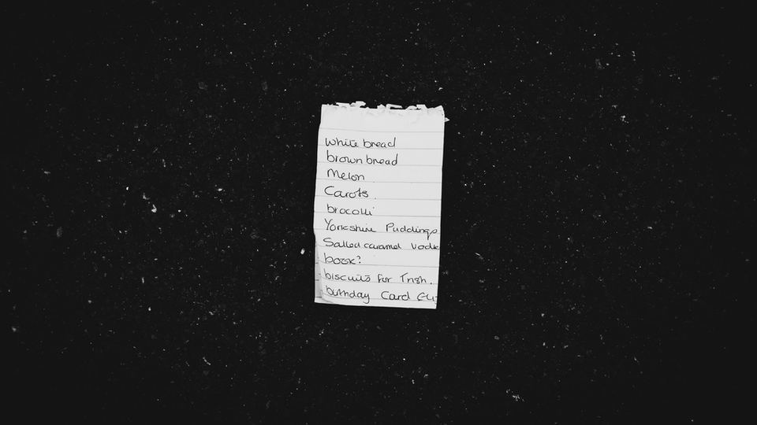

「今日のごはん、何にしよう」。毎日のように考えることなのに、仕事や家事の合間に考えるのは意外と疲れるものです。家族の好き嫌いや、冷蔵庫に残っている食材、週末の予定まで考えると、献立づくりだけで時間が過ぎてしまうこともありますよね。
そんな献立の「考える部分」を手伝ってもらう方法の一つが、ChatGPTのような対話型のAIです。この記事では、ChatGPTに献立を作ってもらうときの指示の出し方を、そのまま使える例文つきで紹介します。1週間分の献立と買い物リストをまとめて作る手順や、入力するときに気をつけたい点もまとめました。
ChatGPTで献立づくりが楽になる理由｜最初に全体像
献立づくりで時間がかかるのは、料理そのものより「何を作るか決めること」です。ChatGPTに条件を伝えると、その条件に合った献立の案を、数日分まとめて出してくれます。案を見て直したいところを伝えれば、何度でも作り直してもらえるのも便利な点です。
- 毎日献立を考えるのがつらい人：数日分をまとめて決めておけば、毎日悩む時間が減る
- 冷蔵庫の食材を使い切りたい人：残っている食材を伝えると、それを使う献立を考えてもらえる
- 買い物の回数を減らしたい人：献立と一緒に買い物リストも作ってもらえる
- 家族の好みや苦手な食材が多い人：条件を最初に伝えておけば、毎回考え直さずにすむ
- 献立がいつも同じになりがちな人：ふだん作らない料理の案も出してもらえる
ChatGPTで献立を作るやり方｜ステップで解説

ステップ1：家族の条件をまとめて伝える
最初に、献立の前提になる条件を伝えます。条件をはっきり伝えるほど、出てくる献立が家庭に合ったものになります。 人数、苦手な食材、調理にかけられる時間、主に使う調理器具などを書いておきましょう。
これから1週間分の夕食の献立を一緒に考えてください。
条件は次のとおりです。
・人数：大人2人、小学生1人
・苦手な食材：セロリ、パクチー
・平日の調理時間：30分以内
・使える調理器具：コンロ2口、電子レンジ、炊飯器
・好み：魚料理を週に2回は入れたい
・1日の構成：主菜1品、副菜1品、汁物1品
まずは月曜日から日曜日までの献立を、表で出してください。アレルギーがある場合は、その食材も条件に入れておきます。ただし、AIの答えには間違いが混ざることもあるため、アレルギーに関わる食材は、最後に自分の目で必ず確認するようにしましょう。
ステップ2：出てきた献立を直してもらう
最初の案がそのまま使えることもありますが、「この日は帰りが遅いから簡単にしたい」「同じ食材が続いている」など、直したいところが出てくることもあります。そのときは、遠慮せずに直してほしい点を伝えます。
ありがとうございます。次の点を直してください。
・水曜日は帰りが遅いので、15分くらいでできる献立にしてください
・鶏肉の料理が3日続いているので、1日は豚肉か魚に変えてください
・週末の土曜日は、子どもと一緒に作れる料理にしてください直してほしい点を箇条書きにすると、AIにも伝わりやすく、自分でも何を頼んだか分かりやすくなります。
ステップ3：買い物リストを作ってもらう
献立が決まったら、それに合わせた買い物リストを作ってもらいます。家にすでにある食材を伝えておくと、買いすぎを防げます。
この献立に必要な買い物リストを作ってください。
・家にあるもの：米、卵、玉ねぎ、にんじん、調味料ひととおり
・家にあるものはリストから外してください
・スーパーの売り場ごと（野菜、肉・魚、乳製品、その他）に分けてください
・量は3人分の目安で書いてください売り場ごとに分けてもらうと、お店の中を行ったり来たりせずに買い物ができます。スマートフォンのメモに貼り付けておけば、そのまま買い物に持っていけます。
ポイント
一度うまくいった「条件の指示文」は、スマートフォンのメモに保存しておくと、翌週からは貼り付けて少し直すだけで使えます。毎回一から書かなくてよくなるのが、続けやすさのコツです。
具体例｜冷蔵庫の残り物で3日分を考える場合
週の後半になると、冷蔵庫に少しずつ食材が残っていることがあります。そんなときは、残っている食材を書き出して、それを使い切る献立を考えてもらう方法もあります。
冷蔵庫に残っている食材で、木曜日から土曜日までの3日分の夕食を考えてください。
・残っている食材：キャベツ半分、豚こま肉、豆腐1丁、しめじ、ねぎ、卵
・できるだけ新しく買うものを少なくしてください
・どうしても足りない食材があれば、最後にまとめて教えてください
・各日の献立に、簡単な作り方の流れも3行くらいで添えてください出てきた献立を見て、作り方が分かりにくいところは「〇〇の作り方を、もう少し詳しく教えてください」と聞き直します。味付けの分量や加熱の時間は、料理の本やレシピサイトとも見比べながら、自分の家の調理器具に合わせて調整すると安心です。
つまずきやすい点と注意点
注意
- 個人情報は入力しない：家族の名前、住所、勤務先、病気の詳しい内容など、個人が分かる情報は入力しないようにしましょう。条件は「大人2人」「小学生1人」のように、ぼかした書き方で十分伝わります
- パスワードや顔写真も入れない：ネットスーパーなどのログイン情報や、家族の顔が写った写真は、AIに入力しないようにしましょう
- 答えには間違いが混ざることがある：分量や加熱時間、食材の組み合わせなどに、事実と違う内容が含まれることがあります。特に生の肉や魚の扱い、アレルギーに関わる部分は、自分で確かめてから使いましょう
- 栄養や健康の判断は任せきりにしない：持病や食事制限がある場合は、AIの答えだけで決めず、医師や管理栄養士などの専門家に相談しましょう
注意
アレルギーのある食材は、条件に入れていても献立に入ってしまうことがあります。買い物の前と調理の前に、献立と材料を自分の目で見直してから使うようにしましょう。
もっと楽にしたいときの道具・サービス
献立をAIで考えたあと、さらに手間を減らしたいときは、次のような観点で道具やサービスを選ぶと便利です。
- AIツールのプラン：ChatGPTには無料で使える範囲と、有料のプランがあります。使える機能や料金は変わることがあるため、公式サイトで確認してから選びましょう
- 献立を書き留める道具：決まった献立を冷蔵庫に貼ったり、ノートに残したりしておくと、家族とも共有しやすくなります
- 作り置きの考え方：週末に少しだけ作り置きをする前提で献立を考えてもらうと、平日の調理がさらに軽くなります
おすすめサービス比較表
| サービス | 料金の目安 | 特徴 | 申込み |
|---|---|---|---|
| イチオシ家事代行のCaSy | 1時間2,790円(税込)〜 | WEBから1分で予約可能・初回定期割引あり | 料金を見る |
| 2家事代行のキャットハンド | 1時間1,980円〜 | 初回トライアルあり・一人暮らし向けプランあり | 料金を見る |
| 3メリーメイド（ダスキン） | 公式サイトで確認 | ダスキンの家事代行サービス | 料金を見る |
※料金・内容は各社の公式情報・広告素材の記載をもとにした目安です（2026年10月時点）。最新の料金・条件は必ず公式サイトでご確認ください。
この記事に関連する商品（楽天市場）
 ChatGPT最強の仕事術楽天ブックス楽天市場で価格を見る
ChatGPT最強の仕事術楽天ブックス楽天市場で価格を見る レシピ帳 バインダー レシピノート セット 6穴 手書き レシピブック レシピファイル レシピカ…PINE BOOK楽天市場で価格を見る
レシピ帳 バインダー レシピノート セット 6穴 手書き レシピブック レシピファイル レシピカ…PINE BOOK楽天市場で価格を見る 作り置き100品 平日五日ぶんの段取りつき 作り置きレシピ本 平日5日分を週末2時間で作りおく1…楽天Kobo電子書籍ストア楽天市場で価格を見る
作り置き100品 平日五日ぶんの段取りつき 作り置きレシピ本 平日5日分を週末2時間で作りおく1…楽天Kobo電子書籍ストア楽天市場で価格を見る
※価格・在庫・送料は変わることがあります。購入前に楽天市場の商品ページでご確認ください。
よくある質問
ChatGPTは無料でも献立を作れますか？
無料で使える範囲でも、この記事のような献立や買い物リストを作ることはできます。ただし、使える回数や機能はプランによって違い、内容も変わることがあります。最新の条件は公式サイトで確認してください。
毎回同じような献立ばかり出てきます。どうすればいいですか？
「先週は〇〇と〇〇を作ったので、それ以外で」「和食・洋食・中華を組み合わせて」のように、避けたいものや、取り入れたい変化を具体的に伝えると、違う案が出やすくなります。
子どもの好き嫌いが多くても使えますか？
苦手な食材や、食べやすい味付けを条件に入れておくと、それに合わせた案を考えてもらえます。「苦手な野菜を細かく刻んで入れる工夫も教えてください」と聞いてみる方法もあります。
節約しながら献立を考えたいときは、どう頼めばいいですか？
「1週間の食費をできるだけ抑えたい」「安く手に入りやすい食材を中心に」と伝えると、それを意識した献立を考えてもらえます。ただし、実際の価格はお店や時期で変わるため、金額の見積もりはあくまで目安として受け取りましょう。
まとめ
この記事のポイント
- 献立づくりで時間がかかる「何を作るか決める」部分を、ChatGPTに手伝ってもらえる
- 人数、苦手な食材、調理時間などの条件をまとめて伝え、出てきた案を直してもらう
- 献立が決まったら、家にあるものを伝えて、売り場ごとの買い物リストを作ってもらう
- 個人情報やパスワード、顔写真は入力しない。分量やアレルギーに関わる部分は自分で確かめる
まずは今週の夕食3日分だけ、この記事の指示文を貼り付けて試してみてください。うまくいった条件をメモに残しておけば、来週からの献立づくりがぐっと軽くなるはずです。